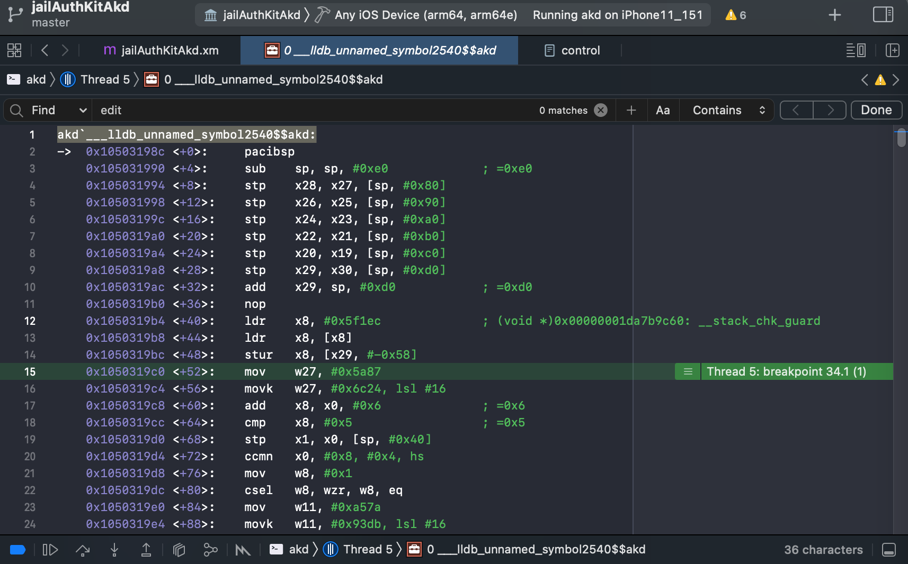
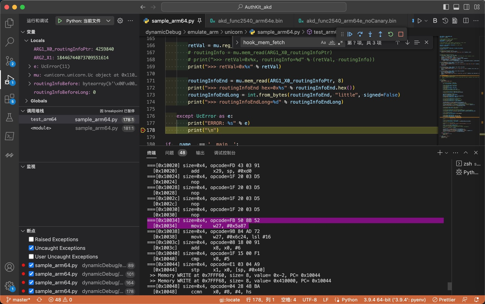

Unicorn中Capstone使用心得
Unicorn真正执行代码 和 Capstone反编译显示的代码 未必完全一样
Capstone反汇编出来的指令，有些细节和Xcode中不太一样
- 即，用Capstone去反汇编看到的指令，和Unicorn真正执行的指令，未必相同
- 但是还是可以供参考的，基本上差距不大
mov vs movz
- Unicorn底层真正执行的指令 == Xcode反汇编看到的指令：
mov
akd`___lldb_unnamed_symbol2540$$akd:
...
0x1050319c0 <+52>: mov w27, #0x5a87

- Capstone反编译出的指令：
movz
===[0x10034] size=0x4, opcode=FB 50 8B 52
[0x10034] movz w27, #0x5a87

—> 经过确认，其实：是一样的。
细节是：
MOV (wide immediate)- 概述
- Move 16-bit immediate to register.
- This instruction is an alias of MOVZ.
- 语法
MOV Wd, #immMOV Xd, #imm
- 解释
- 概述
MOVZ- 概述
- Move shifted 16-bit immediate to register.
- This instruction is used by the alias MOV (wide immediate).
- 语法
MOVZ Wd, #imm{, LSL #shift}MOVZ Xd, #imm{, LSL #shift}
- 概述
- 对比
- 要移动的立即数imm：
MOV (wide immediate)- 有2种
- 对于32位的
Wd：32位 - 对于64位的
Xd：64位
- 对于32位的
- -》和MOVZ的16bit比，32位和64位位数更宽，所以叫做
wide immediate
- 有2种
MOVZ- 16位（无符号的立即数）
- -》而当MOVZ中
shift=0时，且imm的值 <=65536即16位时：MOV (wide immediate)==MOVZ- 举例：当
imm=0x5a87，多种写法，代码逻辑是一样的mov w27, #0x5a87mov x27, #0x5a87movz w27, #0x5a87movz x27, #0x5a87
- 举例：当
- 要移动的立即数imm：
有些值是计算后的值，而不是指令本身的值
概述：有些值是计算后的值，而不是指令本身的值
举例1：adr x25, #0x227e4 vs adr x25, #0x32850
Unicorn调试期间，如果也是像我：用到Capstone去，查看当前反汇编后的ARM汇编代码
尤其要注意，对于adr等指令，其显示出的值：是计算后的值，而不是原始的值
比如：
原始ARM汇编指令是：
adr x25, #0x227e4
而经过Capstone去反汇编出来的，却是：
adr x25, #0x32850
其中的，加上当前PC的值，完整的log是：
0x0001006C <+108>: 39 3F 11 10 -> adr x25, #0x32850
可以看出：
x25=0x32850=当前PC+ 指令中的原始的偏移量 =0x0001006C + 0x227e4
-》否则，不小心就搞错了，以为是：
x25=0x428BC=当前PC+ 指令中的原始的偏移量 =0x0001006C + 0x32850
举例2：LDR x8 #0x5F1EC vs LDR x8 #0x6F214
- 二进制=opcode：
68 8F 2F 58- 条件
- ARM的little endian 小端
- ARM64模式
- 用
- Xcode
- 自己手动解码
- Unicorn
- Capstone
- 正常解码出是
LDR x8 #0x5F1EC
- 只不过：Unicorn/Capstone，会去继续处理：
- 根据此处LDR (literal) == LDR (PC-relative literal)的本意：
具体要加载的值=offset + PC的值=0x5F1EC+当前PC值是0x10028=0x6F214
- 根据此处LDR (literal) == LDR (PC-relative literal)的本意：
- 所以，而是，Unicorn/Capstone中，显示出来的是解码后 + 解析后，最终的结果：
LDR x8 #0x6F214
- 以为是解码错误，实际上是：解码正确的
- 只是显示逻辑上，略有不同而已
- 条件